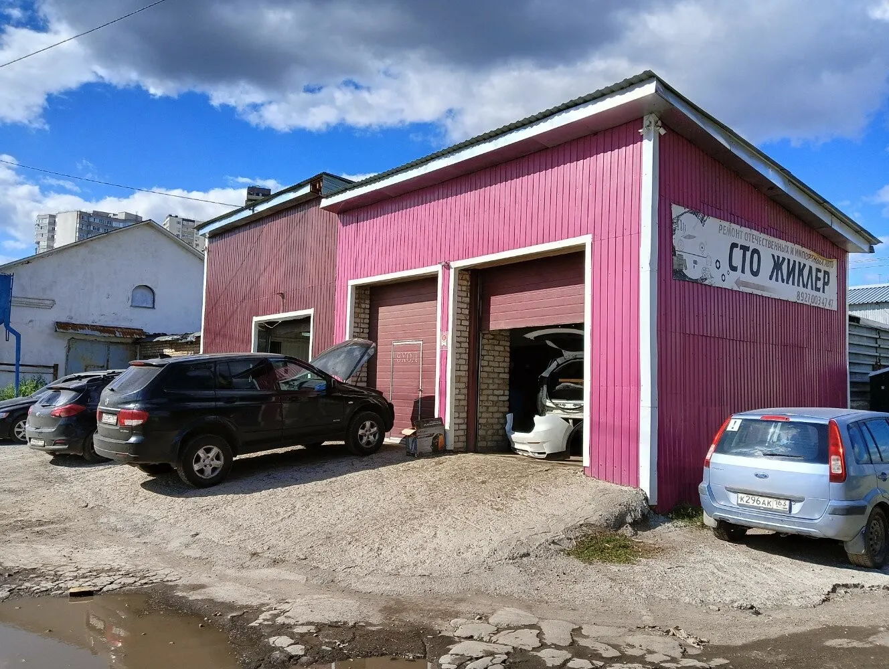
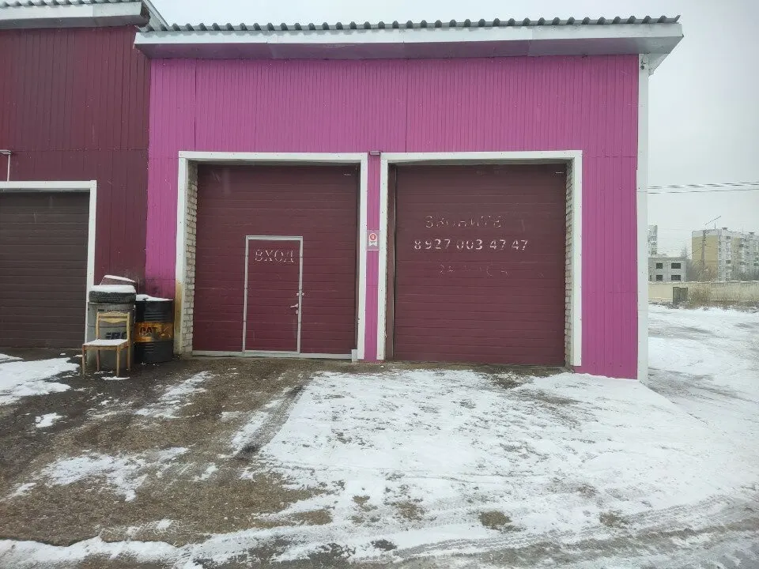
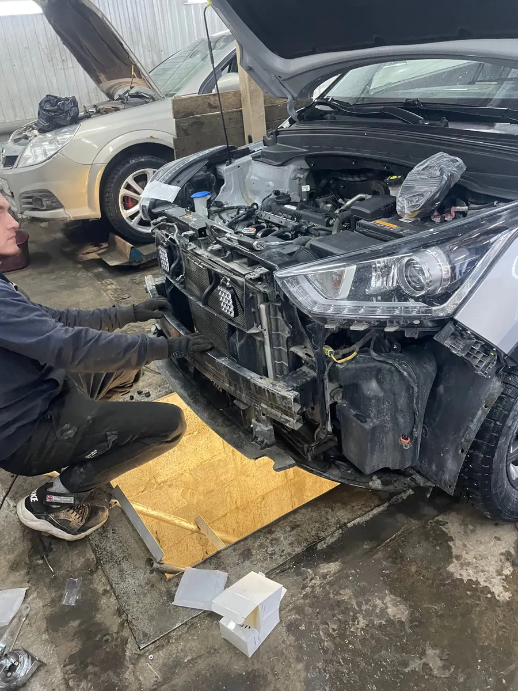
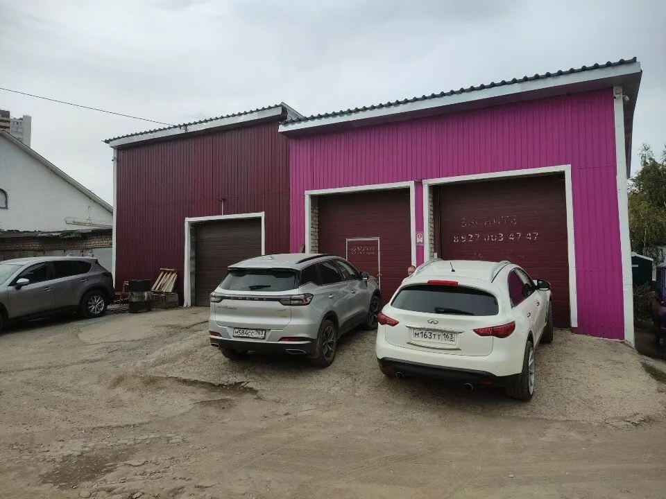

СТО · Самара
Жиклер: автосервис в Самаре с онлайн-записью
Выберите услугу, день и время - запись в одном сообщении. Стоимость назовёт мастер после осмотра.
- Запись одним сообщением
- Ждём: пн-пт 09:00–19:00
- 4,7 и 50 отзывов на Яндекс.Картах

Услуги
Стоимость называем после осмотра: она зависит от марки авто и объёма работ.
Что можно выбрать
- Замена масла в двигателе и коробкев отзывах: всё подсказали и посоветовалиуточнить
- Ремонт отечественных авто и иномароктак написано на вывеске СТОуточнить
- Ремонт нестандартных поломокв отзывах: не боятся нестандартных ситуацийуточнить
- Покупка запчастейв отзывах: сами ездят и покупают нужные запчастиуточнить
Как записаться
Пишете нам
Расскажите, какая машина и что случилось, или выберите услугу, день и время в форме ниже.
Уточняем детали
Администратор подтверждает время и отвечает на вопросы.
Приезжаете
Адрес: Самара, Пятигорская улица, 11, корп. 5.



Что пишут гости
Без накруток цен
В отзыве: работу делают качественно, без разводов и накруток цен.
По делу и ничего лишнего
В отзыве: «Всегда по делу и ничего лишнего, буду рекомендовать знакомым, ребята молодцы!»
Ремонтируют всей семьёй
В отзыве: ремонтирует здесь автомобили всей семьи не первый год, всё быстро и качественно.
Отзывы с Яндекс.Карт
«За годы скитаний по сомнительным сервисам, наконец то нашлось место, где не скажут "у вас конденсант в карбюраторе" 😄 Всегда по делу и ничего лишнего, буду рекомендовать знакомым, ребята молодцы!»
Татьяна Беляева · 9 июня
«Самый лучший автосервис Поменяли масло в двигателе и частичная замена в коробке, Дмитрий все посоветовал и подсказал Рекомендую»
Дарья Мокеева · 3 мая 2025
«Ремонтирую здесь автомобили всей семьи не первый год. Все всегда быстро и качественно. Если нужно, сами ездят, покупают необходимые запчасти. В целом, только положительные отзывы!»
Илья Ростов · 15 апреля 2025
Отзывы с карточки на Яндекс.Картах.
Частые вопросы
Как записаться?
Выберите услугу, день и время в форме на странице или напишите в мессенджер. Администратор подтвердит запись.
Где вы находитесь?
Самара, Пятигорская улица, 11, корп. 5. пн-пт 09:00–19:00.
Сколько это стоит?
Стоимость называем после осмотра: она зависит от марки авто и объёма работ.
Выберите время - подтвердим запись
- Адрес
- Пятигорская улица, 11, корп. 5, Самара
- Часы
- пн-пт 09:00–19:00
- Телефон
- +7 (927) 003-47-47